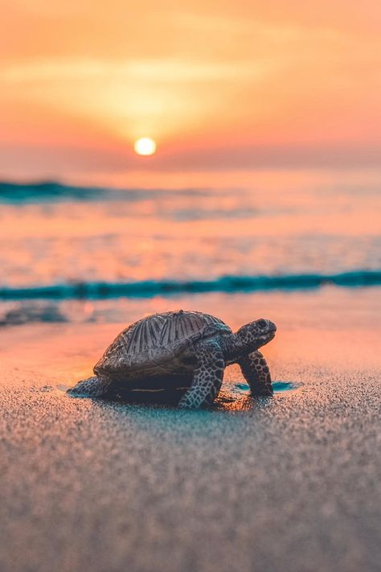
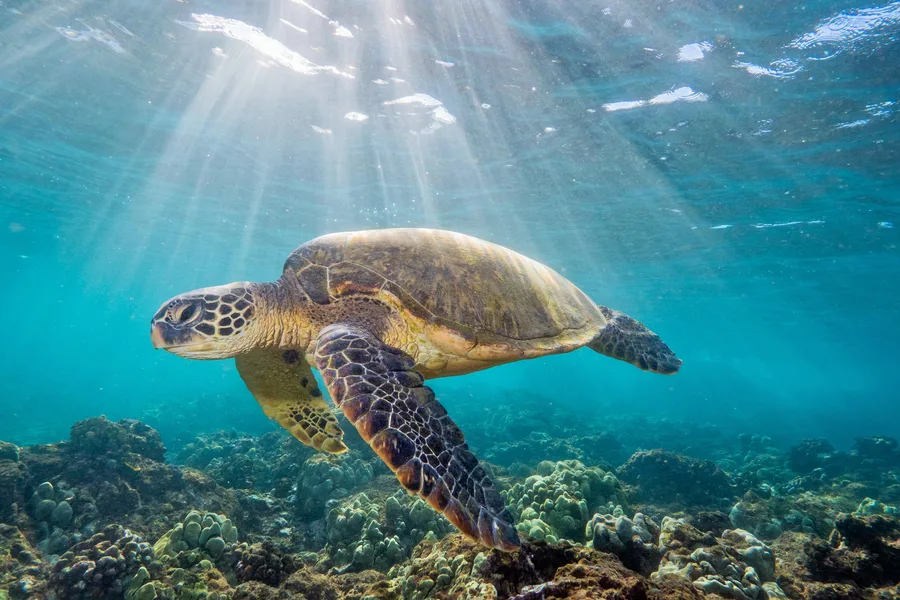

Turtles of the Sri Lanka
Five of the seven species of sea turtles in the world visit the shores of Sri Lanka to breed. They are the Green Turtle , Hawksbill Turtle , Olive Ridley , Loggerhead and Leatherback. There are three species of freshwater turtles and one terrestrial tortoise in Sri Lanka. The freshwater turtles are Parker’s Black Turtle, Sri Lanka Black Turtle and the Soft or Flapshell turtle . The terrestrial tortoise is the Star tortoise .
Why are the Sea Turtles important?
1.BEACHES
Sea turtles also have a positive influence on water. Nesting sea turtles help beaches by depositing their eggs in the sand. Eggshells and unhatched eggs left behind provide important nutrients that nourish dune vegetation such as beach grasses, which stabilise dunes and help to prevent coastal erosion.
2.CORAL REEFS
Coral reefs are home to Hawksbills, which specialise in eating a handful of species of sea sponges. This diet allows less common types of sponges to grow, which increases the variety of life on the reef. Without Hawksbills, sponges can overgrow and suffocate slow-growing corals causing them to die. As reefs become more and more threatened by climate change and other detrimental challenges, the role of the Hawksbill on the reef has become even more crucial.
3.TURTLE PREDATORS
Sea turtles are prey for other animals at all stages of life. Hatchlings are prey for birds, crabs, land mammals, and fish. Adult sea turtles are prey for apex predators like sharks and orcas.
Where can we see Sea Turtles in Sri Lanka?
- Turtle watching is an amazing experience beyond explanation. Watching these calm and peaceful critters in the sea, slowly swimming, looking for their next meal, or hauling themselves up to a sandy beach for nesting - is something that is bound to be in your memory for a long time.
- Depending on the season, Rekawa, Hikkaduwa, Mirissa, Kosgoda, Beruwala and Trincomalee can be considered as the best places in the island to catch a glimpse of these great turtles… or maybe have a swim with them, if you get lucky.
Do u know?

The Green Turtle is the most common in Sri Lankan waters. Growing to a maximum length of 1m and weighing about 250kg, an adult female can lay between 120 to 40 eggs at a time.
Then comes the critically endangered Hawksbill Turtle which is a bit rarer than the Green Turtle. Comparatively, it is much smaller, reaching a maximum length of 90cm and weighing about 50 to 70kg. The Hawksbill gets its name from its narrow head and bird-like beak, which is used to catch animals hiding in small crevices